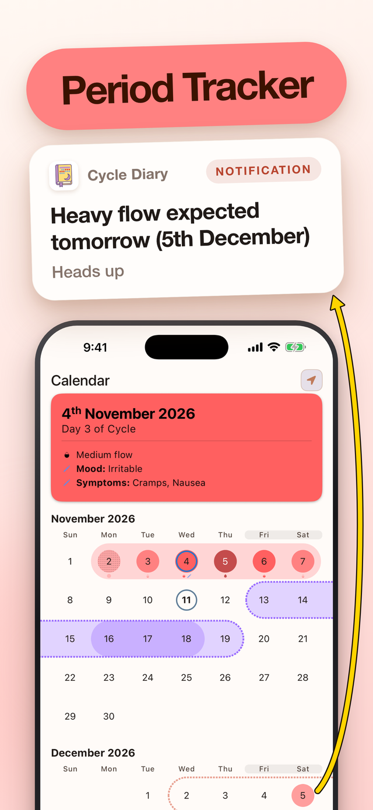
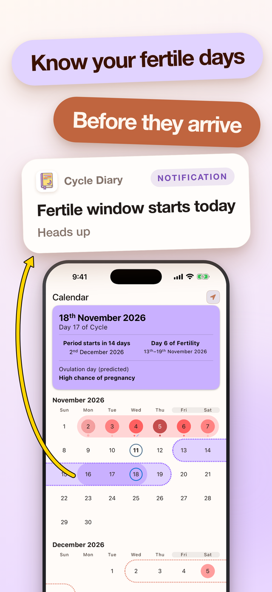
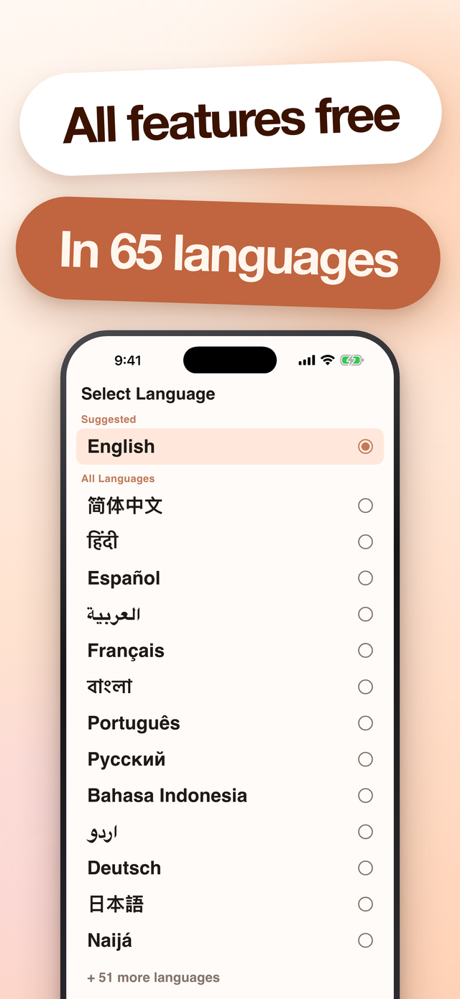
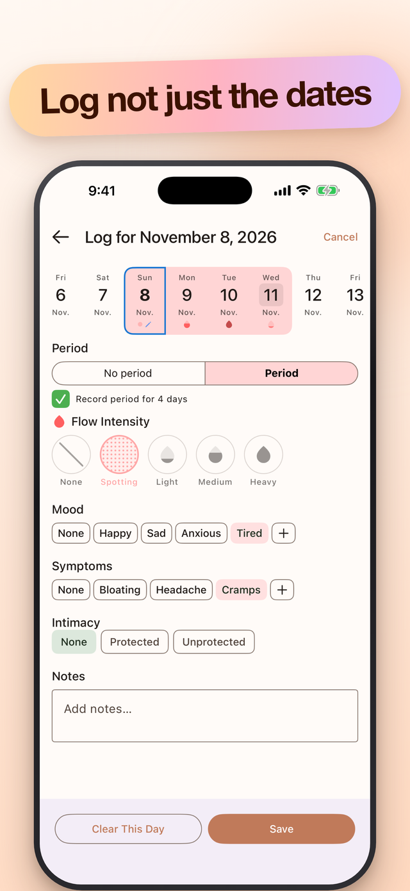
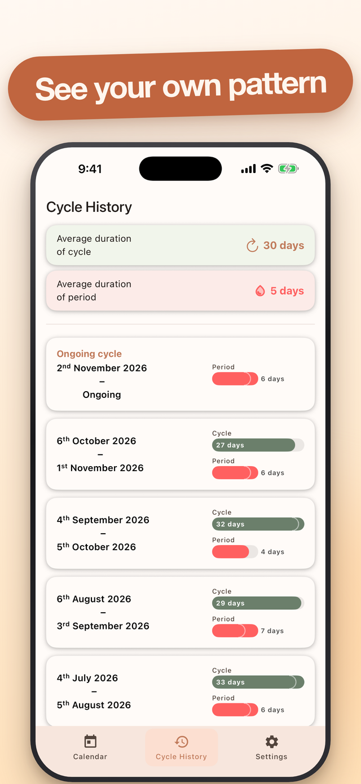
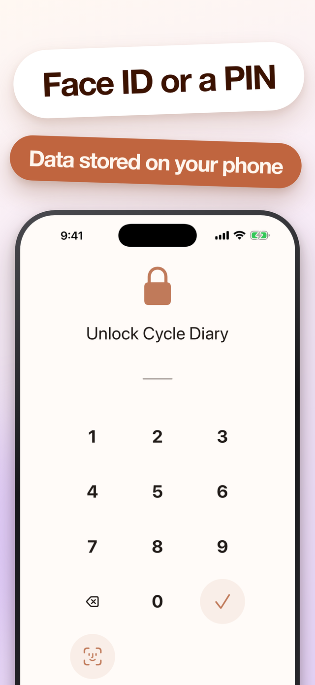

One calendar, filled in by you
Tap a date and mark the flow. The month colours itself in around it, so a glance is enough to see where you are.
A period tracker for iPhone
Mark your days on one simple calendar. Cycle Diary works out your own rhythm from what you record, and tells you what is coming next.


What it does
A calendar, a diary and a set of predictions that come from your own record — not from a textbook average.
Tap a date and mark the flow. The month colours itself in around it, so a glance is enough to see where you are.
Your next period, your fertile window and the day flow is likely to be heaviest — worked out from the cycles you have actually recorded, not an average of strangers.
Every day can hold flow intensity, mood, symptoms, intimacy and a note in your own words.
Optional reminders seven days out, three days out and the day before — plus a nudge when your heaviest day is due.
Cycle history lists every cycle and every period with its own length, and keeps your running averages at the top.
Lock the app behind Face ID or a PIN. Your entries live on your phone and sync through your own Apple Account — and a CSV export gives you a copy of the lot whenever you want one.
Screens
Swipe or scroll sideways




Languages
Chosen when you set the app up, changed whenever you like, and never switched behind your back.
Cycle Diary is on the App Store now. Download it, give the short setup a couple of minutes, and the calendar starts working out your rhythm from the first period you enter.
Cycle Diary is not a medical device. Its predictions are worked out from the dates you enter and are not medical advice, a diagnosis, or a method of contraception. Cycles vary, and a prediction can be wrong. Talk to a doctor or midwife about anything that matters.